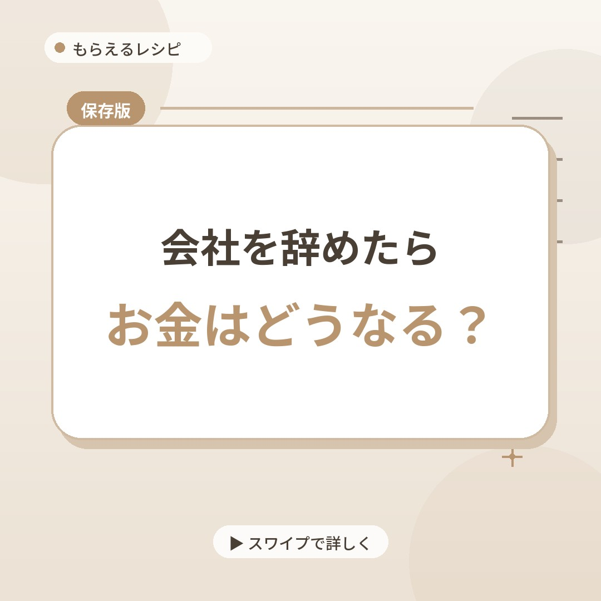
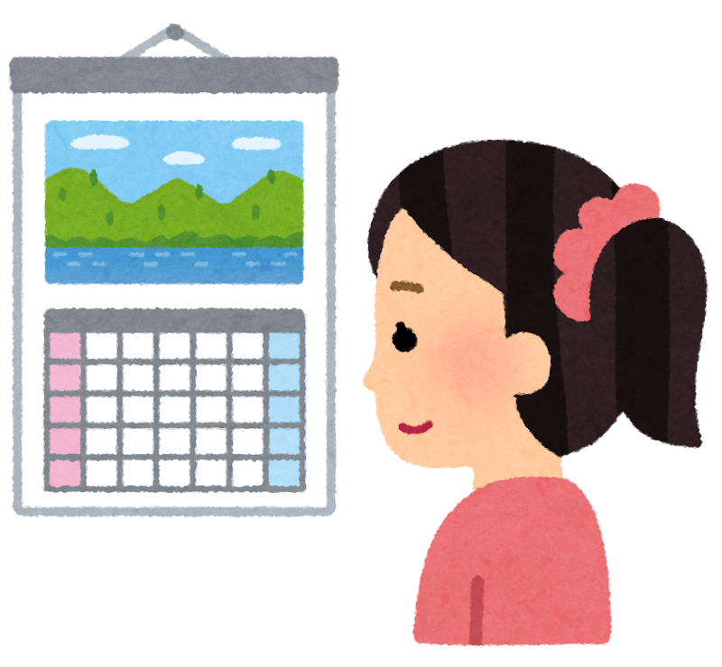
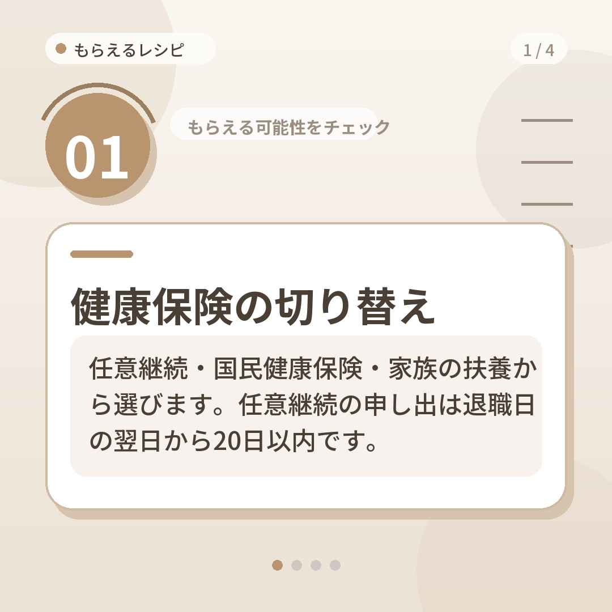
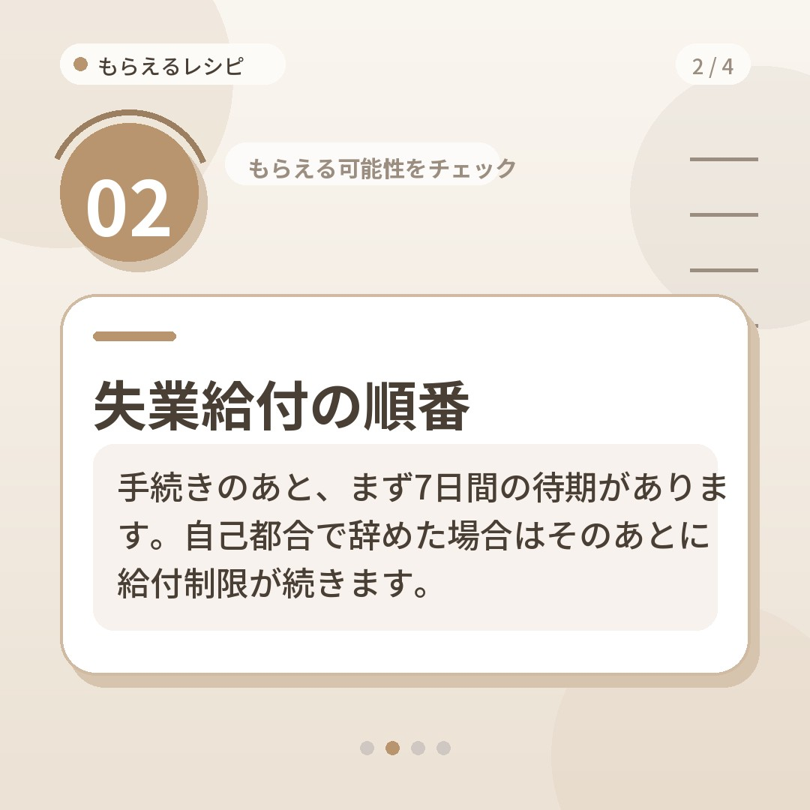
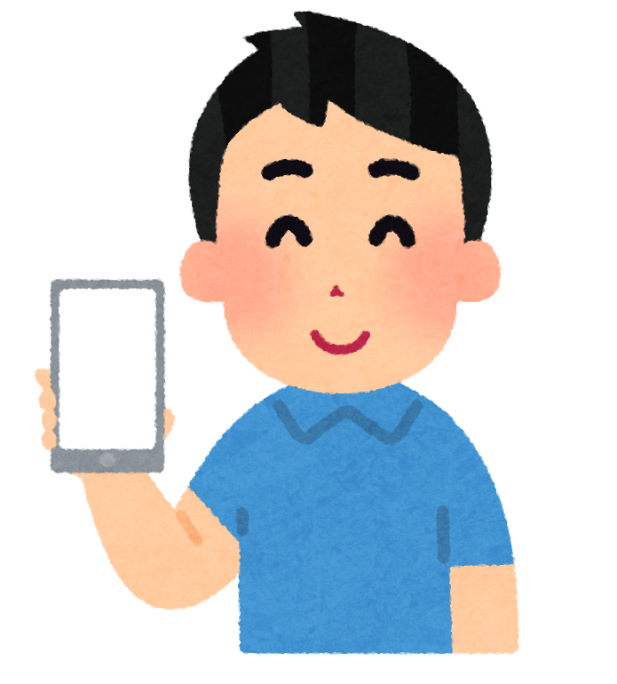

退職したばかりの人へ
年金、保険、失業給付。
どれから手をつける？
退職したあと、国民年金・健康保険・失業給付・住民税のどれから手をつけるか、迷っていませんか。

こんな人に読んでほしいページです
- 会社を辞めたばかりで、年金や保険の切り替えがまだの人
- 届け出の順番が分からず、手が止まっている人
- 調べるほど情報が増えて、何を信じればいいか迷う人
- 失業給付の手続きを、いつ始めればいいか知りたい人
手続きは、待っていても始まらない
会社にいたころは、給料から引かれるだけで済んでいた物が、辞めた日を境に自分の仕事になります。
国民年金、健康保険、失業給付、住民税。どれも、自分で動かないと始まらない手続きです。
しかも、退職後の手続きには、過ぎると選べなくなる期限があります。

たとえば、保険の切り替えを考えているうちに、別の届け出のことを忘れてしまう。そんな「どれを先に？」で止まる人は、少なくないはずです。
公式の情報を確かめてから届けるページがあります
「もらえるレシピ」は、辞めたあとの国民年金・健康保険・失業給付を、公式情報で確認してから届けているページです。
紹介する中身は、各制度の公式サイトや公的機関の情報を確かめたうえで書かれています。

国民年金、健康保険、失業給付、住民税と、退職後に関わる手続きをひとつずつ整理しています。
登録の前に、「しないこと」を先にお伝えします
お金の話をするページは、あやしく見えることもあると思います。だから、行っていないことを最初に並べます。
- MLM・高額な商材・投資の勧誘はありません。
- 手数料や登録料を求めることはありません。
- 情報を見るのも、LINEに参加するのも無料です。
- LINEのビデオ通話や電話でのやり取りは求めません。
- マイナンバー・口座番号・暗証番号を尋ねることはありません。
少しでも不審に思ったら、消費者ホットライン「188」に相談してください。
30秒・3つの質問で、先に見る物が分かる
元のページには、30秒の診断があります。答え終わると、あなたが先に確認すべき物が分かります。
形は、3つの質問に答えるだけ。自分が見落としやすい物が分かります。

手続きを全部ながめる前に、「自分はまずどこを見るか」を決めておくと、迷う時間が減ります。
もらえるレシピのページに移ります
制度ごとの要点は、LINEのメニューから
LINEで友だち追加すると、メニューから制度ごとの要点を確認できます。
登録も相談も無料で、いつでもブロックできます。

手続きの合間に、手もとのスマホで要点を見返せます。
注意と運営について
制度は改正されることがあります。詳しい条件や最新の条件は、各制度の公式窓口で確かめてください。
運営のしくみ：個別相談の中で、希望に応じて提携する法人を紹介することがあり、その場合は紹介先の企業から手数料を受け取る仕組みで運営しています。
LINEに登録すると、LINEのユーザーIDや表示名などの情報を、情報配信と問い合わせ対応のために使います。
運営：もらえるレシピ（公的機関とは関係のない、個人運営の情報発信です）